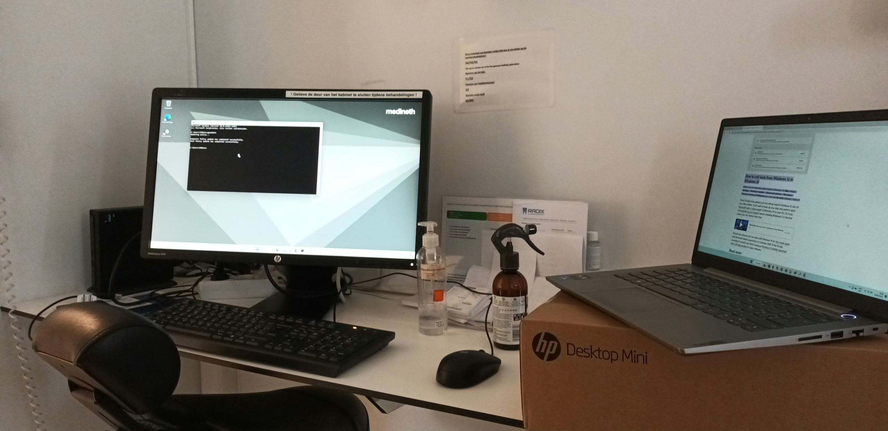

Voormiddag
Vandaag een andere dag dan anders. In de ochtend heb ik zo'n 30 minuten samengewerkt met Brend.
Daarna ben ik samen met Kevin en Xander naar Garage Jacobs gegaan. Hier hebben we een 2 WAN-poort geconfigureerd.
Dit zorgt ervoor dat wanneer de hoofdinternetlijn uitvalt, in dit geval Telenet, er wordt overgeschakeld naar een internetlijn van Proximus.
Eenmaal we hiermee klaar waren gingen we terug naar kantoor. Hier dronk ik snel een koffie want snel daarna vroeg Xander of ik mee wou gaan om pc's te plaatsen.
De pc's hebben we geplaats in Medineth, dit was wel een hele klus. De pc's moesten namelijk op windows 10 draaien hoewel deze al wel waren geconfigureerd als windows 11 pc's
Dit wou dus zeggen dat we heel de pc opnieuw moesten gaan instellen. Wij waren hier niet op voorzien en hadden dus ook geen usb-stick mee met windows 10 op.
Na een tijdje wachten kwam Hilde langs met de usb-stick.
Eens de pc's voorzien waren van windows 10 moesten de juiste programma's nog gëinstalleerd worden. Dit was vrij snel gebeurt.
Toen we op het punt stonden om te vertrekken werden we nog opgezadeld met een klein probleem over een van de software die er gebruikt word.
Ook dit was snel opgelost.
Namiddag
Eens we klaar waren bij Medineth konden we meteen verder naar de volgende klant, Abrico in Haagt.
mijn middagmaal heb ik dan maar gewoon in de auto opgegeten aangezien het een trip van zo'n 40 minuten was.
Een van de werknemers van Abrico had geen bedraad internet meer. Na enige tijd zoeken bleek dit te liggen aan de kabel van de switch naar het muurcontact.
Ik en Xander zijn enige tijd bezig geweest met het reparen ervan maar telkens toen we de kabel teste klopte er nog iets niet.
Toen hebben we de pc maar gewoon verbonden met de wifi.
Toen we aan het opruimen waren kwamen we erachter dat de pc inmiddels alweer verbonden was met bedraad internet, dit is op onverklaarbare wijze gebeurd.
Eenmaal klaar zat de werkdag er weer op, enkel hadden we nog een trip van +-1 uur te gaan naar kantoor.
Mijn dag eindigde om 18u.
Ik zou mijn dag in 1 woord omschrijven als: Vermoeiend.